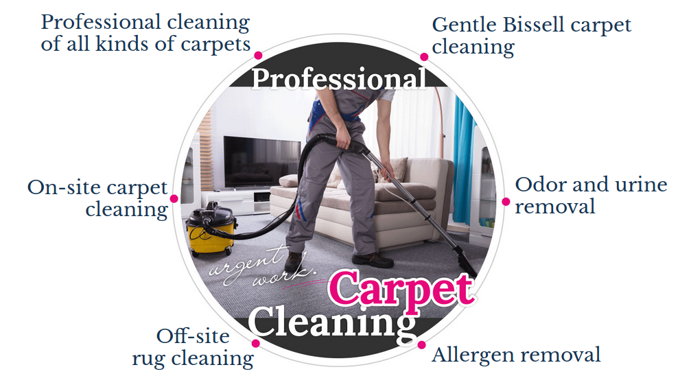

We all know you don’t want to throw away your rug after only a couple of years. But to keep it longer, you have to choose proper detergents for cleaning and disinfecting, to get rid of that smell. In this case, a lot of experience, or a PhD in chemistry would be great. But if you don’t have one, don’t want to take the time to get one and if cleaning carpets isn’t what you live for, call Near Me Services in Santa Clarita. Our carpet cleaning technician knows how to choose the best reagent for this rug, made of this material and for this exact stain. Of course, all the reagents we use have been proven safe for people and animals.


Contact us right now(310) 9239700
Carpets and Rugs
Cleaning
- Cleaning of wool carpets
- Cleaning of shag carpets
- Upholstery cleaning/ disinfection/ stains and odor removal
- Cleaning of jute carpets
- Removal of pet hair, odor and urine. disinfection
- Cleaning of large rugs, children's rugs
- Removal of food and drinks stains, play-doh, ink, gum and wax


Carpets and Rugs
Cleaning

Rugs and carpets make any house more comfortable!
Rugs and/or carpets are always a nice addition to any home. They add style and feel great, especially when you like to walk barefoot around your house. However, rugs (and carpets) do need to be cared for and maintained. Actually, keeping them clean can become a real pain in the neck. They are the one thing in our home that is always used, every day! Since we can’t avoid them, they quickly collect dust and dirt from everything. Even your usual chores, like furniture dusting results in even more dust and dirt for your carpet. Add to that spilled drinks, pets marking their territory and kids playing in the living room. And even if nothing gets spilled or smudged on the rug, it still needs a biannual cleaning and disinfection even if you can’t easily see any stains or dirt.
Wait! Before you start cleaning energetically, remember, it’s very important that you know how to care for your rugs and carpets correctly. Many of them may be ruined by too much rubbing, too-strong detergents or even water. Water is shockingly dangerous for the shape and colors of any natural fibers.
Sure, you can still clean most carpets and rugs without professional help, but really, it’s always better to call Near Me Services in Santa Clarita and allow our team of experts to apply their skills and experience to get your carpets clean and looking like new.
Rugs and carpets make any house more comfortable!
Rugs and/or carpets are always a nice addition to any home. They add style and feel great, especially when you like to walk barefoot around your house. However, rugs (and carpets) do need to be cared for and maintained. Actually, keeping them clean can become a real pain in the neck. They are the one thing in our home that is always used, every day! Since we can’t avoid them, they quickly collect dust and dirt from everything. Even your usual chores, like furniture dusting results in even more dust and dirt for your carpet. Add to that spilled drinks, pets marking their territory and kids playing in the living room. And even if nothing gets spilled or smudged on the rug, it still needs a biannual cleaning and disinfection even if you can’t easily see any stains or dirt.
Wait! Before you start cleaning energetically, remember, it’s very important that you know how to care for your rugs and carpets correctly. Many of them may be ruined by too much rubbing, too-strong detergents or even water. Water is shockingly dangerous for the shape and colors of any natural fibers.
Sure, you can still clean most carpets and rugs without professional help, but really, it’s always better to call Near Me Services in Santa Clarita and allow our team of experts to apply their skills and experience to get your carpets clean and looking like new.


We used to have a cat, but we had to give it away to mom because we found out our 7–year-old got a pet allergy. Surprisin...
>>Testimonals
what our clients say
So, my wife went out of town for a conference for a few days. Naturally, I invited some friends over for guys’ night and ...
>>So, my wife went out of town for a conference for a few days. Naturally, I invited some friends over for guys’ night and ...
>>Carpet cleaning at home:
phases
The cleaning procedure for carpets and upholstery has five stages:
01. Cleaning the surface
First we use special reagents to remove dirt, dust and lint from the top layer of the rug.
02. Cleaning in depth
Then, we apply water-based reagents. These remove dirt and stains which got deeper into the rug.
03. Cleaning the reagents
Next, it’s essential to clean out every trace of the reagents, even though they are safe for people and pets.
04. Manual cleaning
In the case of stains with staying power, our experts will do a manual cleaning; our specialists do it extra carefully so they won’t damage the rug fibers.
05. Drying process
Finally, drying is one of the most critical steps of cleaning. To avoid mildew, smell and restore the rug fibers to their original shape drying must be done carefully and properly.
The cleaning procedure for carpets and upholstery has five stages:
01. Cleaning the surface
First we use special reagents to remove dirt, dust and lint from the top layer of the rug.
02. Cleaning in depth
Then, we apply water-based reagents. These remove dirt and stains which got deeper into the rug.
03. Cleaning the reagents
Next, it’s essential to clean out every trace of the reagents, even though they are safe for people and pets.
04. Manual cleaning
In the case of stains with staying power, our experts will do a manual cleaning; our specialists do it extra carefully so they won’t damage the rug fibers.
05. Drying process
Finally, drying is one of the most critical steps of cleaning. To avoid mildew, smell and restore the rug fibers to their original shape drying must be done carefully and properly.
Don’t try, try again

We’ve all heard the saying, “If at first you don’t succeed, try, try again.” Well, it works in many cases, but just not for cleaning carpets. If you didn’t succeed in removing that stain on the first go-around, don’t try again. As a result, you’ll push the stain even deeper and then it will be even more difficult for a specialist to remove. If you’ve tried and failed, it’s time to call in the pros. Don’t risk your beautiful carpet by not asking for help when you need it!
Risks of home carpet cleaning
Most vacuums can get out more than a half of the dirt and dust in a carpet or rug. But what remains will form what we like to call a 'hazard zone'. The 'hazard zone' is a really attractive place for dust mites and bacteria. This ‘hazard zone’ can’t be fought with water and detergent, so do bother. Sometimes, water and detergent it might even make it worse, since some bacteria thrive in water as well. Of course, you can also accidentally encourage fungus and mildew spores to grow.

One confused pet

On occasion your pet might make a mistake, and decide that rugs and carpets are much more comfortable than his usual toilet place (since it’s always closer) or, he might decide to mark his territory everywhere. When this happens, there are two things you need to do – 1) show your pet who’s boss and 2) make sure that the rugs and carpets are completely clean. There should be no trace of any smell, that way your pet shouldn’t be tempted to repeat his inappropriate action. It’s not very easy to do it yourself (clean the carpet) because you need to consider fibers and color, but our technicians know what to do in this situation, in fact they’ve done it all before.